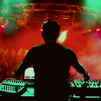
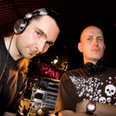
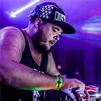
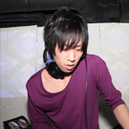
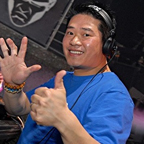

OUTDOOR
02:00 - 03:30
Future Conscience
A melhor promessa nacional no que diz respeito a sons violentos para uma minoria habituada aos extremos.
Vê mais no site oficial.03:30 - 05:00
The Outside Agency
Dupla de Hardcore Techno Holandesa, constituída por DJ Hidden e Eye-D. Produzem música muito variada, mas tão apreciada por ser tão Dark.
Website Oficial05:00 - 07:00
Camellia
Camellia/Camatek é um dos artistas mais conhecidos na cena EDM Japonesa. Produtor multi-facetado, toca em vários géneros eletrónicos e leva-os ao extremo.
DiscogsDifícil imaginar um Line-up melhor!
O melhor DJ Português vai certamente fazer um bom trabalho a aquecer o setup para TOA, uma lenda do Crossbreed.
Camellia termina a noite com um set especial de 2 horas, pensado especialemnte para o melhor festival do ano.
Temos o melhor sistema de som espalhado pelo parque da cidade, onde 2000 pessoas vão poder sentir o ch ao de terra a tremer.
INDOOR
00:00 - 01:00
Nobody
Nobody, dono da Produtora Justice Hardcore é a prova que a cena Happy Hardcore está viva no continente Americano.
Justice Hardcore01:00 - 03:00
USAO
Também conhecido como Caladborg e DJ Nanashi, USAO começou no Frenchcore mas rapidamente associou Hardtek, Hardstyle e Trap à sua mcriação musical.
Discogs03:00 - 05:00
Sei2ure
Este Dj produtor é conhecido pela sua música Crua, Mecânica e Industrial, nunca desiludindo a nível de novidade e criação artística
Beatport05:00 - 06:00
Igneon System

Conhecido por misturar DNB com Hardcore. Live acts muito variados e poderosos.
Third Movement06:00 - 07:00
N-Vitral
Holandês com gostos extraordinários, ficou famoso tanto pelas suas produções como um pelas skills magníficas.
Party Flock07:00 - 09:00
Akira
Um dos melhores Djs na Holanda no que toca a Techno, Terror, Speedcore, desde a década de 90. Dono da Hong Kong Violence
Hong Kong violence09:00 - 12:00
Round Wave Crusher
Produtor focado no Hardtek, Hardcore, Frenchcoe e Speedcore. Tem um estilo único com influências Japonesas e Europeias.
BandcampEste palco vai estar ativo as 12h.
No Recinto fechado do Parque da Cidade, com capacidade para 500 pessoas, haverá todas as condições para uma festa perfeita.
Equipada com luzes e um sistema de som muito bom.
Temperatura controlada com ventoínhas.